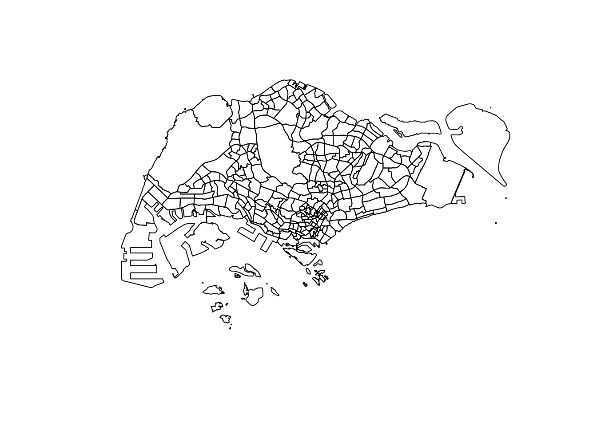
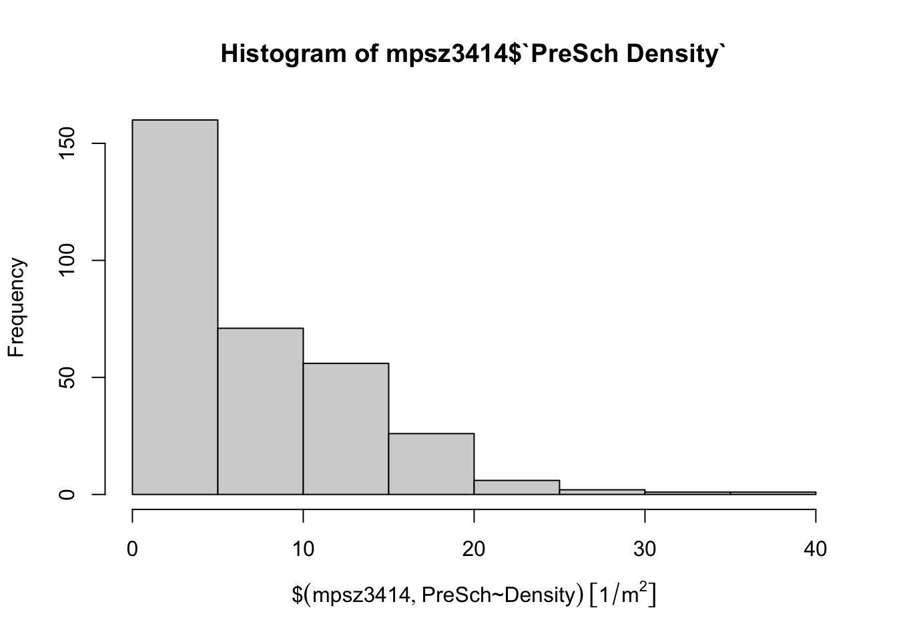

pacman::p_load(sf, tidyverse)Exercise 1A: Geospatial Data Wrangling
1. Getting Started
1.1 Install and launching R packages
The code chunk below uses p_load() of pacman package to check if sf and tidyverse packages are installed into the R environment. If they are, then they will be launched into R.
1.2 Importing Geospatial data
In this section, the following data will be imported into R through st_read() of sf package:
MP14_SUBZONE_WEB_PL, a polygon feature layer in ESRI shapefile formatCyclingPath, a line feature layer in ESRI shapefile format, andPreSchool, a point feature layer in kml file format.
1.2.1 Importing Polygon feature data in shapefile format
The code chunk below uses st_read() of sf package to import MP14_SUBZONE_WEB_PL:
mpsz = st_read(dsn = "data/geospatial",
layer = "MP14_SUBZONE_WEB_PL")Reading layer `MP14_SUBZONE_WEB_PL' from data source
`/Users/smu/Rworkshop/jiawenoh/ISSS624/Hands-on_Ex/Hands-on_Ex01/data/geospatial'
using driver `ESRI Shapefile'
Simple feature collection with 323 features and 15 fields
Geometry type: MULTIPOLYGON
Dimension: XY
Bounding box: xmin: 2667.538 ymin: 15748.72 xmax: 56396.44 ymax: 50256.33
Projected CRS: SVY21It can be observed that there are a total of 323 multipolygon features and 15 fields in mpsz simple feature data frame. mpsz is in svy21 projected coordinates systems.
1.2.2 Importing Polyline feature data in shapefile form
The code chunk below uses st_read() of sf package to import CyclingPath shapefile:
cyclingpath = st_read(dsn = "data/geospatial",
layer = "CyclingPathGazette")Reading layer `CyclingPathGazette' from data source
`/Users/smu/Rworkshop/jiawenoh/ISSS624/Hands-on_Ex/Hands-on_Ex01/data/geospatial'
using driver `ESRI Shapefile'
Simple feature collection with 2558 features and 2 fields
Geometry type: MULTILINESTRING
Dimension: XY
Bounding box: xmin: 11854.32 ymin: 28347.98 xmax: 42626.09 ymax: 48948.15
Projected CRS: SVY21It can be observed that there are a total of 2,558 features and 2 fields in cyclingpath linestring feature data frame. It is in svy21 projected coordinates systems.
1.2.3 Importing GIS data in kml format
The code chunk below will be used to import the kml (pre-schools-location-kml) into R:
preschool = st_read("data/geospatial/PreSchoolsLocation.kml")Reading layer `PRESCHOOLS_LOCATION' from data source
`/Users/smu/Rworkshop/jiawenoh/ISSS624/Hands-on_Ex/Hands-on_Ex01/data/geospatial/PreSchoolsLocation.kml'
using driver `KML'
Simple feature collection with 2290 features and 2 fields
Geometry type: POINT
Dimension: XYZ
Bounding box: xmin: 103.6878 ymin: 1.247759 xmax: 103.9897 ymax: 1.462134
z_range: zmin: 0 zmax: 0
Geodetic CRS: WGS 84It can be observed that there are a total of 2,290 features and 2 fields in preschool point feature data frame. It is a wgs84 coordinates systems.
2. Checking the Content of a Simple Feature Data Frame
After importing the various data sets, we will retrieve information related to the content of a simple feature data frame. We will be working with st_geometry(), glimpse(), and head().
2.1 Working with st_geometry()
By using mpsz$geom or mpsz[[1]], we can retrieve the geometry list-column which only display basic information of the feature class, such as type of geometry, geographic extent of the features and the coordinate system of the data.
st_geometry(mpsz)Geometry set for 323 features
Geometry type: MULTIPOLYGON
Dimension: XY
Bounding box: xmin: 2667.538 ymin: 15748.72 xmax: 56396.44 ymax: 50256.33
Projected CRS: SVY21
First 5 geometries:2.2 Working with glimpse ()
By using glimpse() of dplyr, we are able to learn more about the associated attribution information in the data frame. It reveals the data type of each fields (e.g., FMEL-UPD_D is in data data type, and X_ADDR is a double-precision values)
glimpse(mpsz)Rows: 323
Columns: 16
$ OBJECTID <int> 1, 2, 3, 4, 5, 6, 7, 8, 9, 10, 11, 12, 13, 14, 15, 16, 17, …
$ SUBZONE_NO <int> 1, 1, 3, 8, 3, 7, 9, 2, 13, 7, 12, 6, 1, 5, 1, 1, 3, 2, 2, …
$ SUBZONE_N <chr> "MARINA SOUTH", "PEARL'S HILL", "BOAT QUAY", "HENDERSON HIL…
$ SUBZONE_C <chr> "MSSZ01", "OTSZ01", "SRSZ03", "BMSZ08", "BMSZ03", "BMSZ07",…
$ CA_IND <chr> "Y", "Y", "Y", "N", "N", "N", "N", "Y", "N", "N", "N", "N",…
$ PLN_AREA_N <chr> "MARINA SOUTH", "OUTRAM", "SINGAPORE RIVER", "BUKIT MERAH",…
$ PLN_AREA_C <chr> "MS", "OT", "SR", "BM", "BM", "BM", "BM", "SR", "QT", "QT",…
$ REGION_N <chr> "CENTRAL REGION", "CENTRAL REGION", "CENTRAL REGION", "CENT…
$ REGION_C <chr> "CR", "CR", "CR", "CR", "CR", "CR", "CR", "CR", "CR", "CR",…
$ INC_CRC <chr> "5ED7EB253F99252E", "8C7149B9EB32EEFC", "C35FEFF02B13E0E5",…
$ FMEL_UPD_D <date> 2014-12-05, 2014-12-05, 2014-12-05, 2014-12-05, 2014-12-05…
$ X_ADDR <dbl> 31595.84, 28679.06, 29654.96, 26782.83, 26201.96, 25358.82,…
$ Y_ADDR <dbl> 29220.19, 29782.05, 29974.66, 29933.77, 30005.70, 29991.38,…
$ SHAPE_Leng <dbl> 5267.381, 3506.107, 1740.926, 3313.625, 2825.594, 4428.913,…
$ SHAPE_Area <dbl> 1630379.27, 559816.25, 160807.50, 595428.89, 387429.44, 103…
$ geometry <MULTIPOLYGON [m]> MULTIPOLYGON (((31495.56 30..., MULTIPOLYGON (…2.3 Working with head()
Instead of printing the complete information, head() allow users to select the numbers of record to display (i.e., the n argument)
head(mpsz, n=5)Simple feature collection with 5 features and 15 fields
Geometry type: MULTIPOLYGON
Dimension: XY
Bounding box: xmin: 25867.68 ymin: 28369.47 xmax: 32362.39 ymax: 30435.54
Projected CRS: SVY21
OBJECTID SUBZONE_NO SUBZONE_N SUBZONE_C CA_IND PLN_AREA_N
1 1 1 MARINA SOUTH MSSZ01 Y MARINA SOUTH
2 2 1 PEARL'S HILL OTSZ01 Y OUTRAM
3 3 3 BOAT QUAY SRSZ03 Y SINGAPORE RIVER
4 4 8 HENDERSON HILL BMSZ08 N BUKIT MERAH
5 5 3 REDHILL BMSZ03 N BUKIT MERAH
PLN_AREA_C REGION_N REGION_C INC_CRC FMEL_UPD_D X_ADDR
1 MS CENTRAL REGION CR 5ED7EB253F99252E 2014-12-05 31595.84
2 OT CENTRAL REGION CR 8C7149B9EB32EEFC 2014-12-05 28679.06
3 SR CENTRAL REGION CR C35FEFF02B13E0E5 2014-12-05 29654.96
4 BM CENTRAL REGION CR 3775D82C5DDBEFBD 2014-12-05 26782.83
5 BM CENTRAL REGION CR 85D9ABEF0A40678F 2014-12-05 26201.96
Y_ADDR SHAPE_Leng SHAPE_Area geometry
1 29220.19 5267.381 1630379.3 MULTIPOLYGON (((31495.56 30...
2 29782.05 3506.107 559816.2 MULTIPOLYGON (((29092.28 30...
3 29974.66 1740.926 160807.5 MULTIPOLYGON (((29932.33 29...
4 29933.77 3313.625 595428.9 MULTIPOLYGON (((27131.28 30...
5 30005.70 2825.594 387429.4 MULTIPOLYGON (((26451.03 30...3. Plotting the Geospatial Data
The code chunk below uses plot() of R Graphic to visualize the geospatial features.
Show the code
plot(mpsz)
By default, the sf object is a multi-plot of all attributes. It is possible to plot only only the geometry by using the code chunk below.
Show the code
plot(st_geometry(mpsz))
Alternatively, we are able to choose the plot of sf object. For example, we could like to plot PLN_AREA_N.
Show the code
plot(mpsz["PLN_AREA_N"])
Note: plot() is mean for plotting the geospatial object for quick look. For high cartographic quality plot, other R package such as tmap should be used.
4. Working with Projection
Before performing geoprocessing using two geospatial data, it is crucial for us to ensure that both geospatial data are projected using similar coordinate system. Also known as Project Transformation, we will project a simple feature data system from one coordinate system to another coordinate system.
4.1 Assigning EPSG code to a simple feature data frame
In the code chunk below, it illustrates the coordinate system of mpsz simple feature data frame by using st_crs() of sf package:
st_crs(mpsz)Coordinate Reference System:
User input: SVY21
wkt:
PROJCRS["SVY21",
BASEGEOGCRS["SVY21[WGS84]",
DATUM["World Geodetic System 1984",
ELLIPSOID["WGS 84",6378137,298.257223563,
LENGTHUNIT["metre",1]],
ID["EPSG",6326]],
PRIMEM["Greenwich",0,
ANGLEUNIT["Degree",0.0174532925199433]]],
CONVERSION["unnamed",
METHOD["Transverse Mercator",
ID["EPSG",9807]],
PARAMETER["Latitude of natural origin",1.36666666666667,
ANGLEUNIT["Degree",0.0174532925199433],
ID["EPSG",8801]],
PARAMETER["Longitude of natural origin",103.833333333333,
ANGLEUNIT["Degree",0.0174532925199433],
ID["EPSG",8802]],
PARAMETER["Scale factor at natural origin",1,
SCALEUNIT["unity",1],
ID["EPSG",8805]],
PARAMETER["False easting",28001.642,
LENGTHUNIT["metre",1],
ID["EPSG",8806]],
PARAMETER["False northing",38744.572,
LENGTHUNIT["metre",1],
ID["EPSG",8807]]],
CS[Cartesian,2],
AXIS["(E)",east,
ORDER[1],
LENGTHUNIT["metre",1,
ID["EPSG",9001]]],
AXIS["(N)",north,
ORDER[2],
LENGTHUNIT["metre",1,
ID["EPSG",9001]]]]As seen from the result, the EPSG code is inaccurate. Instead of showing 3414 (svg21), it displays 9001 (last row). This is a common issue that could happen in the process of importing geospatial data into R. The coordinate system of the source data could be missing or wrongly assigned.
In order to rectify the EPSG code, we will use the st_set_crs() of sf package:
mpsz3414 <- st_transform(mpsz, 3414)To validate, we will used the code chunk below:
st_crs(mpsz3414)Coordinate Reference System:
User input: EPSG:3414
wkt:
PROJCRS["SVY21 / Singapore TM",
BASEGEOGCRS["SVY21",
DATUM["SVY21",
ELLIPSOID["WGS 84",6378137,298.257223563,
LENGTHUNIT["metre",1]]],
PRIMEM["Greenwich",0,
ANGLEUNIT["degree",0.0174532925199433]],
ID["EPSG",4757]],
CONVERSION["Singapore Transverse Mercator",
METHOD["Transverse Mercator",
ID["EPSG",9807]],
PARAMETER["Latitude of natural origin",1.36666666666667,
ANGLEUNIT["degree",0.0174532925199433],
ID["EPSG",8801]],
PARAMETER["Longitude of natural origin",103.833333333333,
ANGLEUNIT["degree",0.0174532925199433],
ID["EPSG",8802]],
PARAMETER["Scale factor at natural origin",1,
SCALEUNIT["unity",1],
ID["EPSG",8805]],
PARAMETER["False easting",28001.642,
LENGTHUNIT["metre",1],
ID["EPSG",8806]],
PARAMETER["False northing",38744.572,
LENGTHUNIT["metre",1],
ID["EPSG",8807]]],
CS[Cartesian,2],
AXIS["northing (N)",north,
ORDER[1],
LENGTHUNIT["metre",1]],
AXIS["easting (E)",east,
ORDER[2],
LENGTHUNIT["metre",1]],
USAGE[
SCOPE["Cadastre, engineering survey, topographic mapping."],
AREA["Singapore - onshore and offshore."],
BBOX[1.13,103.59,1.47,104.07]],
ID["EPSG",3414]]4.2 Transforming the project of preschool from wgs84 to svy21
Notably, it is common for us to transform original data from geographic coordinate system to projected coordinate system as the geographic coordinate system is not appropriate if the analysis requires distance and/or area measurements.
We performed the project transformation by using the code chunk below:
preschool3414 <- st_transform(preschool,
crs = 3414)To display the first 5 geometries and content of the preschool3414 data frame, we will use head():
head(preschool3414, n=5)Simple feature collection with 5 features and 2 fields
Geometry type: POINT
Dimension: XYZ
Bounding box: xmin: 24821.92 ymin: 31299.16 xmax: 28844.56 ymax: 46303.16
z_range: zmin: 0 zmax: 0
Projected CRS: SVY21 / Singapore TM
Name
1 kml_1
2 kml_2
3 kml_3
4 kml_4
5 kml_5
Description
1 <center><table><tr><th colspan='2' align='center'><em>Attributes</em></th></tr><tr bgcolor="#E3E3F3"> <th>CENTRE_NAME</th> <td>CHILDREN'S COVE PRESCHOOL PTE.LTD.</td> </tr><tr bgcolor=""> <th>CENTRE_CODE</th> <td>PT9390</td> </tr><tr bgcolor="#E3E3F3"> <th>INC_CRC</th> <td>498CC9FE48CC94D4</td> </tr><tr bgcolor=""> <th>FMEL_UPD_D</th> <td>20211201093631</td> </tr></table></center>
2 <center><table><tr><th colspan='2' align='center'><em>Attributes</em></th></tr><tr bgcolor="#E3E3F3"> <th>CENTRE_NAME</th> <td>CHILDREN'S COVE PTE. LTD.</td> </tr><tr bgcolor=""> <th>CENTRE_CODE</th> <td>PT8675</td> </tr><tr bgcolor="#E3E3F3"> <th>INC_CRC</th> <td>22877550804213FD</td> </tr><tr bgcolor=""> <th>FMEL_UPD_D</th> <td>20211201093631</td> </tr></table></center>
3 <center><table><tr><th colspan='2' align='center'><em>Attributes</em></th></tr><tr bgcolor="#E3E3F3"> <th>CENTRE_NAME</th> <td>CHILDREN'S VINEYARD PRESCHOOL PTE. LTD</td> </tr><tr bgcolor=""> <th>CENTRE_CODE</th> <td>PT9308</td> </tr><tr bgcolor="#E3E3F3"> <th>INC_CRC</th> <td>B2FE90E44AD494E3</td> </tr><tr bgcolor=""> <th>FMEL_UPD_D</th> <td>20211201093631</td> </tr></table></center>
4 <center><table><tr><th colspan='2' align='center'><em>Attributes</em></th></tr><tr bgcolor="#E3E3F3"> <th>CENTRE_NAME</th> <td>CHILDTIME CARE & DEVELOPMENT CENTRE PTE.LTD.</td> </tr><tr bgcolor=""> <th>CENTRE_CODE</th> <td>PT9122</td> </tr><tr bgcolor="#E3E3F3"> <th>INC_CRC</th> <td>1384CDC0D14B76A1</td> </tr><tr bgcolor=""> <th>FMEL_UPD_D</th> <td>20211201093631</td> </tr></table></center>
5 <center><table><tr><th colspan='2' align='center'><em>Attributes</em></th></tr><tr bgcolor="#E3E3F3"> <th>CENTRE_NAME</th> <td>CHILTERN HOUSE</td> </tr><tr bgcolor=""> <th>CENTRE_CODE</th> <td>PT2070</td> </tr><tr bgcolor="#E3E3F3"> <th>INC_CRC</th> <td>FB24EAA6E73B2723</td> </tr><tr bgcolor=""> <th>FMEL_UPD_D</th> <td>20211201093631</td> </tr></table></center>
geometry
1 POINT Z (25089.46 31299.16 0)
2 POINT Z (27189.07 32792.54 0)
3 POINT Z (28844.56 36773.76 0)
4 POINT Z (24821.92 46303.16 0)
5 POINT Z (28637.82 35038.49 0)5. Importing and Converting an Aspatial Data
In this section, we will import an aspatial data (not a geospatial data but contains fields that captured the x- and y-coordinates of the data points) into the R environment and save it as a tibble dataframe. Thereafter, we will convert it into a simple feature data frame.
5.1 Importing the aspatial data
For the purpose of the exercise, we will be using the Singapore listing (listings.csv) as retrieved from AirBnb.
listings <- read_csv("data/aspatial/listings.csv")To ensure data accuracy, we will check if the data file have been imported correctly. The code chunk below uses list() of Base R instead of glimpse().
list(listings) [[1]]
# A tibble: 3,483 × 18
id name host_id host_name neighbourhood_group neighbourhood latitude
<dbl> <chr> <dbl> <chr> <chr> <chr> <dbl>
1 71609 Villa in… 367042 Belinda East Region Tampines 1.35
2 71896 Home in … 367042 Belinda East Region Tampines 1.35
3 71903 Home in … 367042 Belinda East Region Tampines 1.35
4 275343 Rental u… 1439258 Kay Central Region Bukit Merah 1.29
5 275344 Rental u… 1439258 Kay Central Region Bukit Merah 1.29
6 289234 Home in … 367042 Belinda East Region Tampines 1.34
7 294281 Rental u… 1521514 Elizabeth Central Region Newton 1.31
8 324945 Rental u… 1439258 Kay Central Region Bukit Merah 1.29
9 330095 Rental u… 1439258 Kay Central Region Bukit Merah 1.29
10 369141 Place to… 1521514 Elizabeth Central Region Newton 1.31
# ℹ 3,473 more rows
# ℹ 11 more variables: longitude <dbl>, room_type <chr>, price <dbl>,
# minimum_nights <dbl>, number_of_reviews <dbl>, last_review <date>,
# reviews_per_month <dbl>, calculated_host_listings_count <dbl>,
# availability_365 <dbl>, number_of_reviews_ltm <dbl>, license <chr>Observations:
Tibble data frame consists of 3,483 rows and 18 columns
Useful fields for our analysis :
latitudeandlongitude(note: decimal degree format)
Assumption:
- Data is in wgs84 geographic coordinate system
5.2 Creating a simple feature data frame from an aspatial data frame
In the code chunk below, we will be using st_as_sf() of sf package to convert listing data frame into a simple feature data frame:
listings_sf <- st_as_sf(listings,
coords = c("longitude", "latitude"),
crs=4326) %>%
st_transform(crs = 3414)To examine the content of our newly created simple feature data frame:
glimpse(listings_sf)Rows: 3,483
Columns: 17
$ id <dbl> 71609, 71896, 71903, 275343, 275344, 28…
$ name <chr> "Villa in Singapore · ★4.44 · 2 bedroom…
$ host_id <dbl> 367042, 367042, 367042, 1439258, 143925…
$ host_name <chr> "Belinda", "Belinda", "Belinda", "Kay",…
$ neighbourhood_group <chr> "East Region", "East Region", "East Reg…
$ neighbourhood <chr> "Tampines", "Tampines", "Tampines", "Bu…
$ room_type <chr> "Private room", "Private room", "Privat…
$ price <dbl> 150, 80, 80, 55, 69, 220, 85, 75, 45, 7…
$ minimum_nights <dbl> 92, 92, 92, 60, 60, 92, 92, 60, 60, 92,…
$ number_of_reviews <dbl> 20, 24, 47, 22, 17, 12, 133, 18, 6, 81,…
$ last_review <date> 2020-01-17, 2019-10-13, 2020-01-09, 20…
$ reviews_per_month <dbl> 0.14, 0.16, 0.31, 0.17, 0.12, 0.09, 0.9…
$ calculated_host_listings_count <dbl> 5, 5, 5, 52, 52, 5, 7, 52, 52, 7, 7, 1,…
$ availability_365 <dbl> 89, 89, 89, 275, 274, 89, 365, 365, 365…
$ number_of_reviews_ltm <dbl> 0, 0, 0, 0, 3, 0, 0, 1, 3, 0, 0, 0, 0, …
$ license <chr> NA, NA, NA, "S0399", "S0399", NA, NA, "…
$ geometry <POINT [m]> POINT (41972.5 36390.05), POINT (…Observation:
- Instead of
longitudeandlatitude, a new column calledgeometryhas been added into the data frame.
6. Geoprocessing with sf package
In this section, we will be performing two comonly used geoprocessing functions, namely buffering and point in polygon count.
6.1 Buffering
The scenario: The authority is planning to upgrade the exiting cycling path. To do so, they need to acquire 5 metres of reserved land on the both sides of the current cycling path.
The task: To determine the extend of the land need to be acquired and their total area.
The solution:
In the code chunk below, we will be using st_buffer() of sf package is used to compute the 5-meter buffers around cycling paths.
buffer_cycling <- st_buffer(cyclingpath,
dist=5, nQuadSegs = 30)Then, we calculate the area of the buffers:
buffer_cycling$AREA <- st_area(buffer_cycling)Lastly, we use sum() of Base R to derive the total land involved
sum(buffer_cycling$AREA)1774367 [m^2]6.2 Point-in-polygon count
The scenario: A pre-school service group want to find out the numbers of pre-schools in each Planning Subzone.
The solution:
The code chunk below performs two operations at one go. Firstly, identify pre-schools located inside each Planning Subzone by using st_intersects(). Next, length() of Base R is used to calculate numbers of pre-schools that fall inside each planning subzone.
mpsz3414$`PreSch Count`<- lengths(st_intersects(mpsz3414, preschool3414))
Warning
Be careful and do not be confuse with st_intersection() !
We can check the summary statistics of the newly derieved Presch Count Field by using summary() as shown in the code chunk below:
summary(mpsz3414$`PreSch Count`) Min. 1st Qu. Median Mean 3rd Qu. Max.
0.00 0.00 4.00 7.09 10.00 72.00 To list the planning subzone with the most number of pre-school, the top_n() of dplyr package is used as shown in the code chunk below:
top_n(mpsz3414, 1, `PreSch Count`)Simple feature collection with 1 feature and 16 fields
Geometry type: MULTIPOLYGON
Dimension: XY
Bounding box: xmin: 39655.33 ymin: 35966 xmax: 42940.57 ymax: 38622.37
Projected CRS: SVY21 / Singapore TM
OBJECTID SUBZONE_NO SUBZONE_N SUBZONE_C CA_IND PLN_AREA_N PLN_AREA_C
1 189 2 TAMPINES EAST TMSZ02 N TAMPINES TM
REGION_N REGION_C INC_CRC FMEL_UPD_D X_ADDR Y_ADDR SHAPE_Leng
1 EAST REGION ER 21658EAAF84F4D8D 2014-12-05 41122.55 37392.39 10180.62
SHAPE_Area geometry PreSch Count
1 4339824 MULTIPOLYGON (((42196.76 38... 72The solution:
Step 1: Use st_area() of sf package to derive the area of each planning subzone
mpsz3414$Area <- mpsz3414 %>%
st_area()Step 2: Apply mutate() of dplyr package to compute the density
mpsz3414 <- mpsz3414 %>%
mutate(`PreSch Density` = `PreSch Count`/Area * 1000000)7. Exploratory Data Analysis (EDA)
In this section, we will explore the data through ggplot2 functions. We will create functional and insightful statistical graphs to aid in our exploratory progress. We will plot a histogram and a scatterplot.
7.1 Plotting Histogram
To observe the distribution of PreSch Density, a histogram is insightful. We can used hist() of R graphics or ggplot2 to plot.
7.1.1 Histogram using hist()
Show the code
hist(mpsz3414$`PreSch Density`)
Despite the easy syntax, the output is far from ideal as it limits further customization.
7.1.2 Histogram using ggplot2()
Show the code
ggplot(data=mpsz3414,
aes(x= as.numeric(`PreSch Density`)))+
geom_histogram(bins=20,
color="black",
fill="light blue") +
labs(title = "Are pre-school even distributed in Singapore?",
subtitle= "There are many planning sub-zones with a single pre-school, on the other hand, \nthere are two planning sub-zones with at least 20 pre-schools",
x = "Pre-school density (per km sq)",
y = "Frequency")
7.2 Plotting Scatterplot
To observe the relationship between Pre-school Density and Pre-school count, a scatterplot could be ideal.
Show the code
ggplot(data=mpsz3414,
aes(y = `PreSch Count`,
x= as.numeric(`PreSch Density`)))+
geom_point(color="black",
fill="light blue") +
xlim(0, 40) +
ylim(0, 40) +
labs(title = "",
x = "Pre-school density (per km sq)",
y = "Pre-school count")